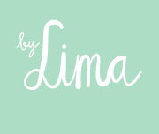
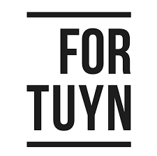
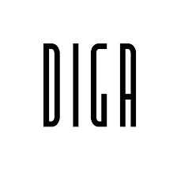
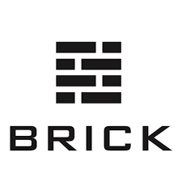

By Lima
Adres: Kleine houtstraat 138
Plaats: Haarlem
Telefoon nummer: 023 785 3564

Adres: Kleine houtstraat 138
Plaats: Haarlem
Telefoon nummer: 023 785 3564

Adres: Grote Markt 23
Plaats: Haarlem
Telefoon nummer: 023 202 2991

Adres: Oude groenmarkt 10-12
Plaats: Haarlem
Telefoon nummer: 023 576 5785

Adres: Lange Veerstraat 15
Plaats: Haarlem
Telefoon nummer: 023 551 1870
| Naam | Adres | Plaats | Telefoon |
|---|---|---|---|
| By Lima | Kleine houtstraat 138 | Haarlem | 023 785 3564 |
| Fortuyn | Grote Markt 23 | Haarlem | 023 202 2991 |
| Diga | Oude groenmarkt 10-12 | Haarlem | 023 576 5785 |
| Brick | Lange Veerstraat 15 | Haarlem | 023 551 1870 |